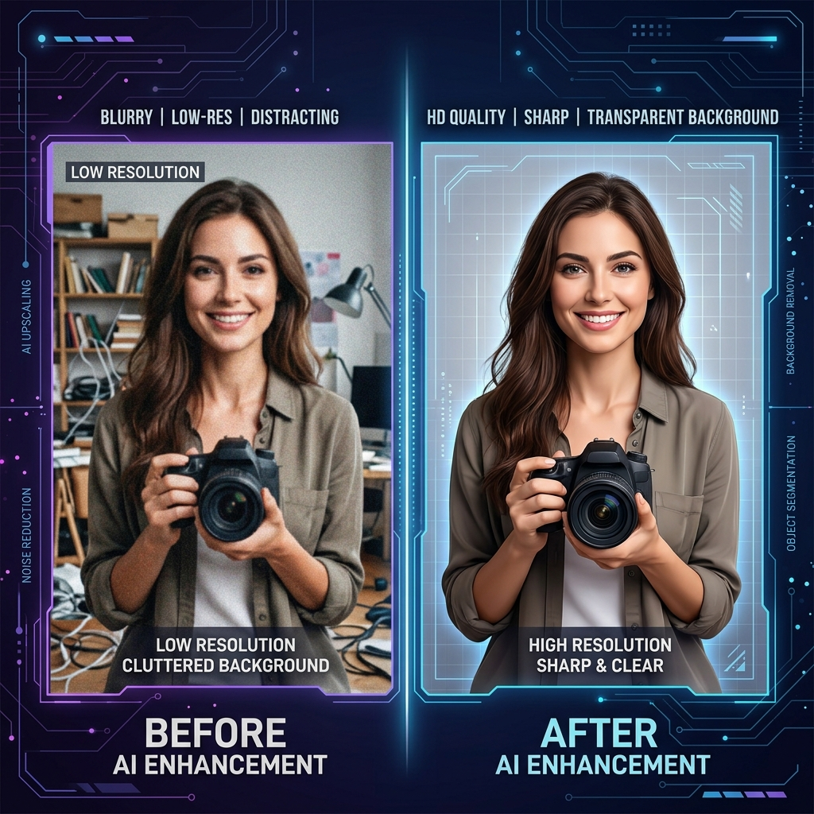

Enhance Your Visuals: AI Image Upscaling and Background Removal Explained

Artificial Intelligence has revolutionized the way we edit images. What used to take hours of manual work in a professional studio can now be accomplished in seconds with a single click. But how does it actually work, and how can you use these tools to elevate your own visuals?
In this guide, we'll dive deep into two of the most powerful AI-driven image tools: Upscaling and Background Removal. Whether you're an entrepreneur looking to clean up product shots or a student wanting to improve an old photo, these tools are your new best friends.
1. The Magic of AI Image Upscaling
Traditional image resizing is a simple mathematical process: if you double the size of an image, the computer just duplicates the existing pixels. This results in the "blocky" or "blurry" look we've all seen. AI Upscaling (also known as Super-Resolution) is fundamentally different.
Instead of just duplicating pixels, a deep learning model has been trained on millions of high-resolution images. It looks at your low-res photo and actually reconstructs the missing details—the texture of skin, the sharpness of text, or the fine lines in a logo. It's not just making it bigger; it's making it better.
- Preserve Detail: Keeps edges sharp and textures realistic.
- Reduce Noise: Automatically cleans up "grain" or "compression artifacts" from old JPGs.
- Print Ready: Turn a small web image into something high-res enough for physical printing.
2. Effortless Background Removal
The "cutout" is one of the most common tasks in design. Traditionally, this required the "Pen Tool" and a lot of manual clicking around the edges of a subject. AI Background Removal uses Object Detection and Semantic Segmentation to do this automatically.
The AI identifies what is "subject" and what is "background," even down to difficult details like flyaway hair or transparent glass. Once identified, it creates a precise mask and removes the background, leaving you with a clean PNG that you can place onto any new backdrop.
3. Practical Use Cases
Why should you care? Here are some real-world applications for these tools:
- E-commerce: Turn a messy smartphone photo of a product into a professional, "floating" asset with a transparent background.
- Profile Pictures: Remove a distracting background from a great photo of yourself to create a clean LinkedIn or social media avatar.
- Restoration: Take a small, blurry scan of an old family photo and upscale it to see faces more clearly.
- Marketing: Quickly create "stickers" or assets for social media posts by cutting out subjects from their original context.
4. The Browser Advantage: Privacy and Performance
At VerifyDocs, we believe in local AI. Many of our AI tools run directly in your browser using your computer's GPU. This means your photos aren't being sent to a server for processing, keeping your personal data 100% private. Plus, there's no waiting for uploads or downloads—the processing happens as fast as your computer can think.
5. Best Practices for Better Results
To get the best out of AI tools, keep these tips in mind:
- Start with the best you have: While AI is powerful, a slightly better starting image will always yield a much better final result.
- Watch the edges: In background removal, ensure your subject has decent contrast against the background for the cleanest cutout.
- Don't over-upscale: While you can go 4x or even 8x, often a 2x upscale is all you need for a natural-looking improvement.
Conclusion
AI image tools have democratized professional design. You no longer need a degree in graphic arts to create stunning, high-resolution visuals. By leveraging the power of AI upscaling and background removal in our clean, fast workspace, you can save time and produce better results than ever before.
Ready to enhance your images?
Experience the power of local AI. Upscale your photos or remove backgrounds in seconds, for free.